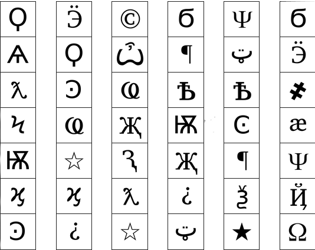

ON THE SUBJECT OF WIRES
In order to defuse the wires, you must click on them in the correct order.
A wire will turn white if it is correctly cut.
If multiple wires are the same colour, cut them one after the other.
Below are the cases to follow when cutting wires. If you cannot follow a step, go to the next one.
Once a wire is cut correctly, go back to step 1.
Cutting the wrong wire will get you a strike, but clicking on empty space or a wire that's already been cut is fine.
| Case 1: 3 wires |
1. Cut blue wires.
2. Otherwise, cut magenta wires.
3. If there are no magenta wires, cut green wires.
4. If there are no green wires, cut red wires. |
| Case 2: 4 wires |
|---|
1. Cut green wires.
2. Otherwise, cut blue wires.
3. If there are no blue wires, cut red wires.
4. If there are no red wires, cut magenta wires. |
| Case 3: 5 wires |
|---|
1. Cut blue wires.
2. Otherwise, cut green wires.
3. If there are no green wires, cut magenta wires.
4. If there are no magenta wires, cut red wires. |
ON THE SUBJECT OF BUTTONS
In order to defuse the button, you must press the button, wait the right amount of time, then press it again
You will have 3 elements determining the amount of time
The buttons colour
The word on the button
The indicator colour next to the button fills up as the time approaches how long you must hold the button
| BUTTON COLOUR |
|---|
| RED: +0 seconds |
| WHITE: +1 seconds |
| YELLOW: +2 seconds |
| BLUE: +3 seconds |
| BUTTON WORD |
|---|
| Press: +0 seconds |
| Hold: +1 seconds |
| Click: +2 seconds |
| Button: +3 seconds |
| INDICATOR COLOUR (SECRET EFFECT ON THE BOMB) |
|---|
| RED: ??? |
| WHITE: ??? |
| YELLOW: ??? |
| BLUE: ??? |
ON THE SUBJECT OF SIMON SAYS
In order to defuse simon says, you must copy the pattern being produced
You must repeat the pattern a given amount of times with the pattern increasing by one click each time
The pattern being shown, is not the same one that must be inputted
The inputted pattern depends on the amount of strikes present
| NO STRIKES |
|---|
| Red flash |
Blue flash |
Green flash |
Yellow flash |
| Yellow press |
Blue press |
Red press |
Green press |
| 1 STRIKE |
|---|
| Red flash |
Blue flash |
Green flash |
Yellow flash |
| Green press |
Yellow press |
Red press |
Blue press |
| 2 STRIKES |
|---|
| Red flash |
Blue flash |
Green flash |
Yellow flash |
| Red press |
Green press |
Yellow press |
Blue press |
ON THE SUBJECT OF SYMBOLS
In order to defuse symbols, you must press the 4 symbols in the correct order
4 symbols will be randomly selected from one of the 6 strips of symbols
Symbols take priority in descending order (IE top most symbol pressed first)
